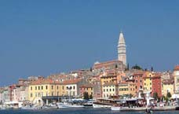
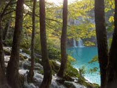
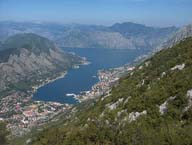
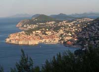

Bulletin N° 15
Octobre 2006
Crocs à scie�

Circuit en CROATIE du 4 au 11 Septembre 2006

Nous partîmes plus de trente d'un bel aéroport,
Pour découvrir la nouvelle République croate.
Après un rapide et aérien transport,
PULA , nous accueillit, avec Darko sans cravate�
Jakov, nous conduisit à l'hôtel Belvédère.
L'accueil fut convenable, les chambres un peu moins.
La vue sur l'Adriatique apaisa la colère.
Chacun vida son sac, nous prenant à témoin.
La visite de ROVINJ nous rappela Venise :
Les pavés patinés, les ruelles étroites�
Du haut de Ste Euphémie, la vue était exquise :
Les appareils crépitaient à gauche et à droite.
La journée à PULA fut quelque peu romaine ;
Une guide, très pressée, disait sa conférence.
Nous garderons gravées les grandioses arènes.
Le lendemain, riche en magnificence,
Nous conduisit à PLITVICE , un grand parc naturel.
Cascades et lacs, vert émeraude, en camaïeux,
Nous émerveillèrent. Ces paysages surnaturels
Surprirent par leur beauté et emplirent nos yeux.
ZADAR , DIADORA , "qui était là", ville
Antédiluvienne conserve des trésors fabuleux.
Les remparts ruinés ont donné la Riva tranquille
Où les Orgues marines émettent des appels mystérieux.
SIBENIK , fière de ses joyaux, montre avec confiance
La frise de têtes humaines, les lions, Adam et Eve� ;
Tandis que TROGIR , aux diverses influences
Ouvre ses portes du XV e siècle, sur un passé de rêve.
Le Palais de Dioclétien, écrin d'Histoire et de vie,
Fait de SPLIT , une capitale impériale.
La forteresse de DUBROVNIK étale à l'envie
Les remparts protecteurs de la Raguse méridionale.
Paulo, érudit, volubile, rempli de gentillesse,
Vanta Raguse, son Stradun, sa fontaine�
Son humour, sa gestuelle, nous mit tous en liesse.
C'est à ZATON que, la troupe devenue mondaine,
Se mit à croiser dans l'archipel des Elaphites.
Les îles escarpées, le bleu pur de la mer
Agrémentèrent la promenade et les visites.
L'étape au Monténégro , nous entraîna vers
Les bouches de KOTOR et, de ce fjord magnifique,
Nous avalâmes, avec effort, la montée de Lovcen .
Chacun de nous, profitant de la vue panoramique,
Mitrailla le site. Dévalant sur CETINJE
Avec force prudence, Jakov nous amena voir
Nicolas� Le Musée nous conquit, le repas
Nous combla. Après une halte à BUDVA , le soir
Nous plaça sur la voie du retour� D'un bon pas,
Nous nous rassemblâmes à l'aérogare.
L'avion avala passagers et bagages.
L'atterrissage nous secoua, sans crier gare !
Sur le plancher des vaches, il est bon de fouler les pâturages.
Marie-Thérèse MARTIN  
___________________________________
Page 1 : Le Mot du Président
Page 2 : Commission Vérité et Mémoire
Page 3 : Voyages & Divers
Page 4 : Visite de St Gilhem le Désert & Divers
Page 5 :C.R. voyage en Russie & Divers
Page 6 :C.R. voyage en Croatie
|